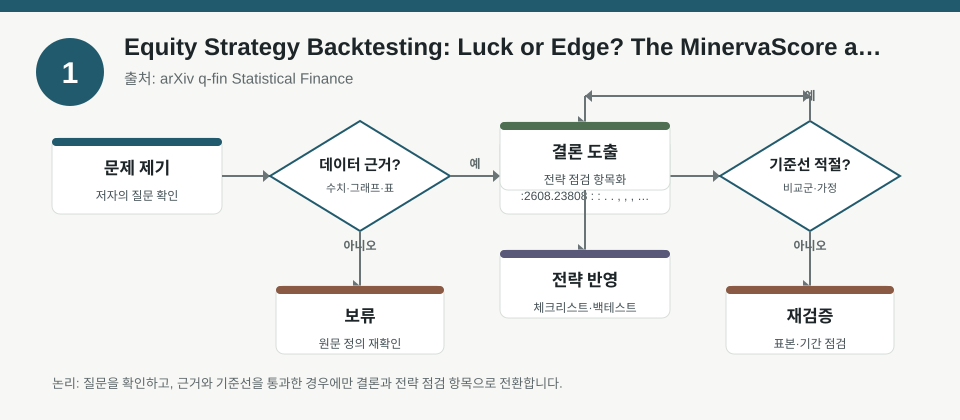
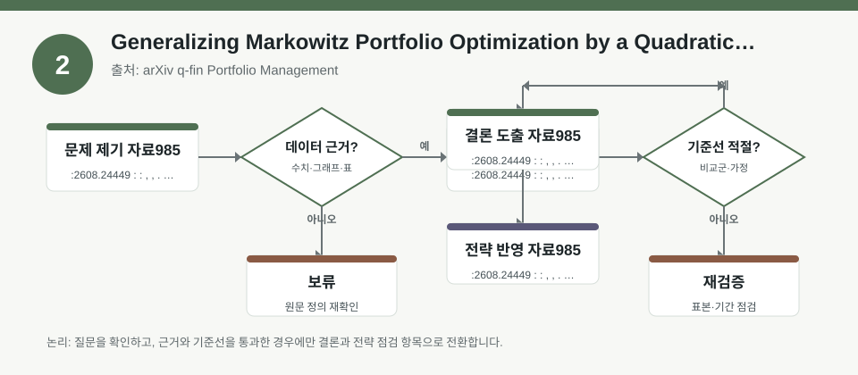
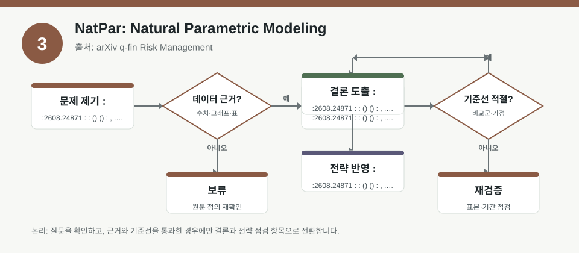

핵심 요약
- 결론: 최신 자료 3건은 모두 “수익률 결과”보다 “가정·노출·검증 방식”을 먼저 보라는 공통 메시지를 줍니다.
- 원칙: 수치가 메타데이터에 없는 부분은 사실로 단정하지 말고, 백테스트 조건·리스크 측정법·계약 구조를 확인 항목으로 남겨야 합니다.
주목할 자료
| 번호 | 자료 | 출처 | 원문 | 핵심 내용 | 데이터 포인트 | 리스크/한계 |
|---|---|---|---|---|---|---|
| 1 | Equity Strategy Backtesting: Luck or Edge? The MinervaScore as a Statistical Robustness Grade | arXiv q-fin Statistical Finance | 원문 보기 | 백테스트 성과가 우연한 탐색 결과인지, 지속 가능한 신호인지 구분하려는 연구입니다. | 후보군을 얼마나 많이 시험했는지, 선택 편향, 강건성 점수 필요 | 메타데이터만으로는 MinervaScore 산식과 검증 구간을 확정할 수 없음 |
| 2 | Generalizing Markowitz Portfolio Optimization by a Quadratic Risk Measure | arXiv q-fin Portfolio Management | 원문 보기 | 전통적 분산 대신 더 넓은 2차 위험측도에서도 마코위츠의 해를 닫힌형으로 확장한 포트폴리오 이론입니다. | 공분산 외 위험측도 선택, 제약조건, 최적화 해의 해석 | 어떤 위험측도가 실제 데이터에 적합한지, 추정 오차가 얼마나 큰지 메타데이터로는 미확인 |
| 3 | NatPar: Natural Parametric Modeling | arXiv q-fin Risk Management | 원문 보기 | 자연재해형 모형을 파라메트릭 계약 구조로 확장해, 노출·취약성·재무구조를 하나의 계약 설계로 연결합니다. | hazard-exposure-vulnerability-finance 프레임, 지표 연동 계약 | 지수 선정과 트리거 오차, 베이시스 리스크, 실제 보상 적합성은 본문 검토 필요 |
자료별 상세
1. Equity Strategy Backtesting: Luck or Edge? The MinervaScore as a Statistical Robustness Grade

- 핵심: 백테스트 성과가 좋아 보여도, 후보를 많이 돌린 결과인지 아니면 진짜 신호인지 먼저 의심해야 합니다.
- 데이터 포인트: 후보 수, 파라미터 탐색 범위, 선택된 규칙의 강건성 점수가 핵심 검수 항목입니다.
- 리스크: 메타데이터에는 강건성 점수 산식, 표본 분할 방식, 과최적화 방지 절차가 충분히 제시되지 않았습니다.
- 투자전략 반영 예시: 한국 주식 투자자는 KOSPI/KOSDAQ 업종 팩터를 볼 때 성과 숫자보다 “검증한 규칙 수”와 “구간별 일관성”을 체크리스트에 넣을 수 있습니다.
- 실행 예시: 동일 전략을 업종별·변동성 구간별·환율 민감 구간별로 다시 나눠, 결과가 한 구간에만 집중되는지 점검해 볼 수 있습니다.
2. Generalizing Markowitz Portfolio Optimization by a Quadratic Risk Measure

- 핵심: 포트폴리오 최적화는 분산만이 아니라 더 넓은 2차 위험측도로도 구성될 수 있어, 위험 정의가 바뀌면 해석도 달라집니다.
- 데이터 포인트: 공분산 행렬 대신 어떤 위험측도를 쓰는지, 그리고 그 선택이 자산 비중과 제약조건에 어떤 영향을 주는지가 관건입니다.
- 리스크: 메타데이터만으로는 실제 데이터에서의 추정 오차, 안정성, 거래비용 반영 여부를 확인할 수 없습니다.
- 투자전략 반영 예시: 한국 투자자는 포트폴리오 점검표에 금리 민감주, 수출주, 내수주, 중소형주를 나눠 위험측도 변화에 따른 노출 변화를 기록할 수 있습니다.
- 실행 예시: 같은 자산군을 분산 기준과 다른 2차 위험측도로 각각 최적화해 보고, 업종 집중도와 회전율이 어떻게 달라지는지 비교해 볼 수 있습니다.
3. NatPar: Natural Parametric Modeling

- 핵심: 보험형 파라메트릭 구조는 실제 손실 보상보다 “지표가 발동되면 지급”되는 설계이므로, 노출과 트리거의 정합성이 중요합니다.
- 데이터 포인트: hazard-exposure-vulnerability-finance 연결 구조와 지표 기반 계약 설계가 핵심 프레임입니다.
- 리스크: 메타데이터만으로는 베이시스 리스크, 트리거 오차, 계약이 실제 손실을 얼마나 대변하는지 확인할 수 없습니다.
- 투자전략 반영 예시: 한국 주식 투자자는 자연재해·공급망·원자재 충격이 큰 업종을 볼 때, 손실 원인과 헤지 지표가 얼마나 맞는지 체크리스트로 점검할 수 있습니다.
- 실행 예시: 수출주, 건설·보험·유틸리티처럼 외생 충격 민감도가 다른 업종을 나눠, 지수형 위험관리 도구의 트리거 적합성을 기록해 두는 방식이 유용합니다.
팩터·리스크·포트폴리오 관점
- 핵심: 세 자료 모두 “예쁜 결과”보다 팩터 노출, 위험 정의, 계약 또는 백테스트 구조의 타당성이 성과 해석의 출발점임을 보여줍니다.
- 검수: 표본 수, 파라미터 탐색 폭, 위험측도 선택 이유, 트리거와 실제 손실의 불일치 여부를 본문에서 반드시 확인해야 합니다.
정리
- 결론: 한국 투자자 관점에서는 KOSPI/KOSDAQ 업종 배분, 환율·금리·인플레이션 민감도, 변동성·신용·규제 리스크를 숫자보다 가정 중심으로 점검하는 태도가 중요합니다.
- 다음 확인: 각 자료의 본문에서 백테스트 구간, 위험측도 정의, 계약 트리거와 실제 손실의 정합성을 추가로 검증해야 합니다.